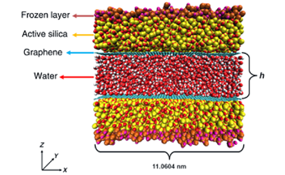
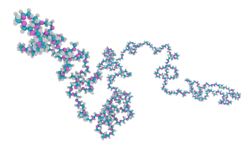
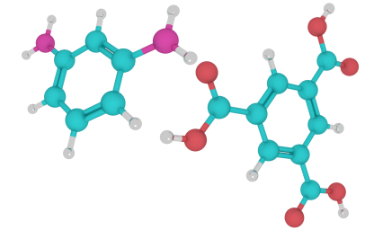
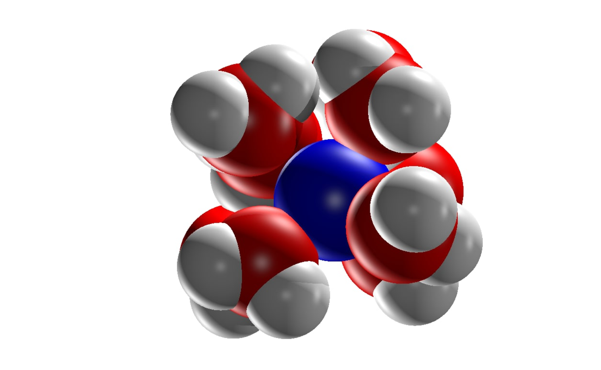

Flow in Coated Silica Channels
Inspired by the recently reported translucency of monolayer graphene (GE) to wetting,
atomistic simulations are employed to evaluate water flow enhancement induced by GE
deposited on the inner surfaces of hydrophilic nanochannels.

Polymer Rheology Predictions
Rheological prediction from first principles using the slip-link model are made.
The discrete slip-link theory is a hierarchy of strongly connected models that have
great success predicting the linear and nonlinear rheology of high-molecular-weight polymers.

Polymeric Coated Pore
2D-materials can be
deposited on polymeric substrates increasing the transport efficiency of water
solutions through nanopores. In the present work, we study the hydrodynamics in
a polymeric nanoslit pore with graphene and hexagonal boron nitride wall coatings.

Startup of Steady Shear Flow
The importance of non-universality in inception of shear flow at large strain rates is examined using the discrete slip-link model (DSM).

Interfacial Thermal Transport
Here, we study the role of the underlying substrate on interfacial heat transport in supported graphene nanochannels with water.

Eleectroosmotic Transport
Non-equilibrium Molecular Dynamics (NEMD) simulations are conduced to study phenomena related to the presence of charge inversion in electrolytes confined in nanopores
 https://orcid.org/0000-0002-7429-9151
https://orcid.org/0000-0002-7429-9151